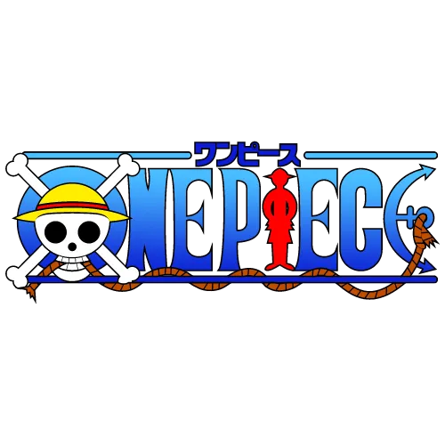

<nav class="navbar">
  <div class="navbar-container">
    <a class="navbar-brand" [routerLink]="['/tomos']">
      <span class="brand-text">One Piece</span>
    </a>
    
    <div class="navbar-center">
      
    </div>
    
    <div class="navbar-links">
      <ul class="navbar-menu">
        <li class="menu-item">
          <a routerLink="/tomos" routerLinkActive="active-link">
            
            <span>Inicio</span>
          </a>
        </li>
        <li class="menu-item">
          <a routerLink="/tomos/crear" routerLinkActive="active-link">
            
            <span>Agregar Tomo</span>
          </a>
        </li>
      </ul>
    </div>
  </div>
</nav>

<router-outlet></router-outlet>

